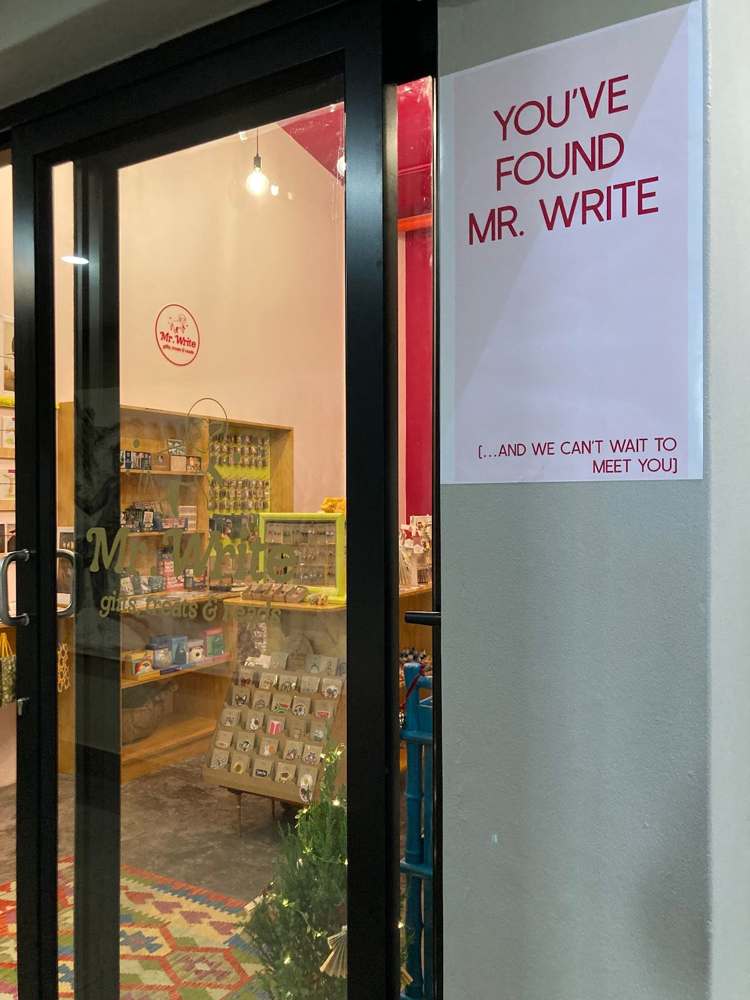
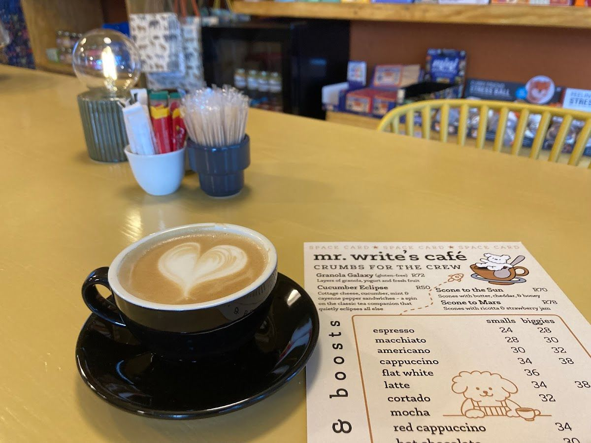
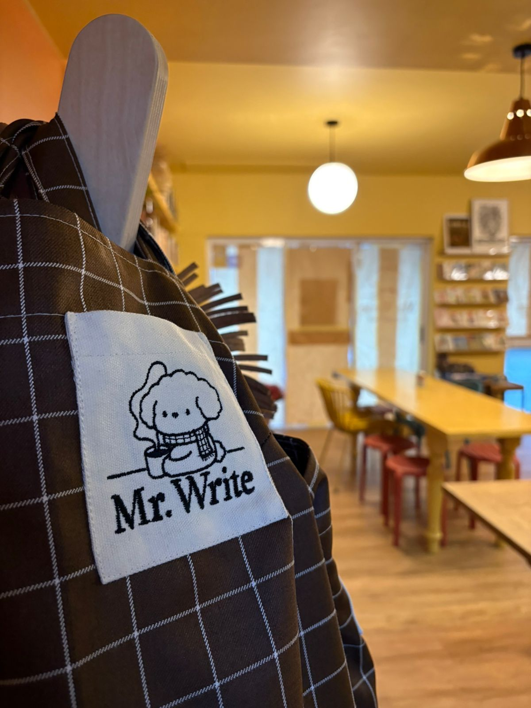
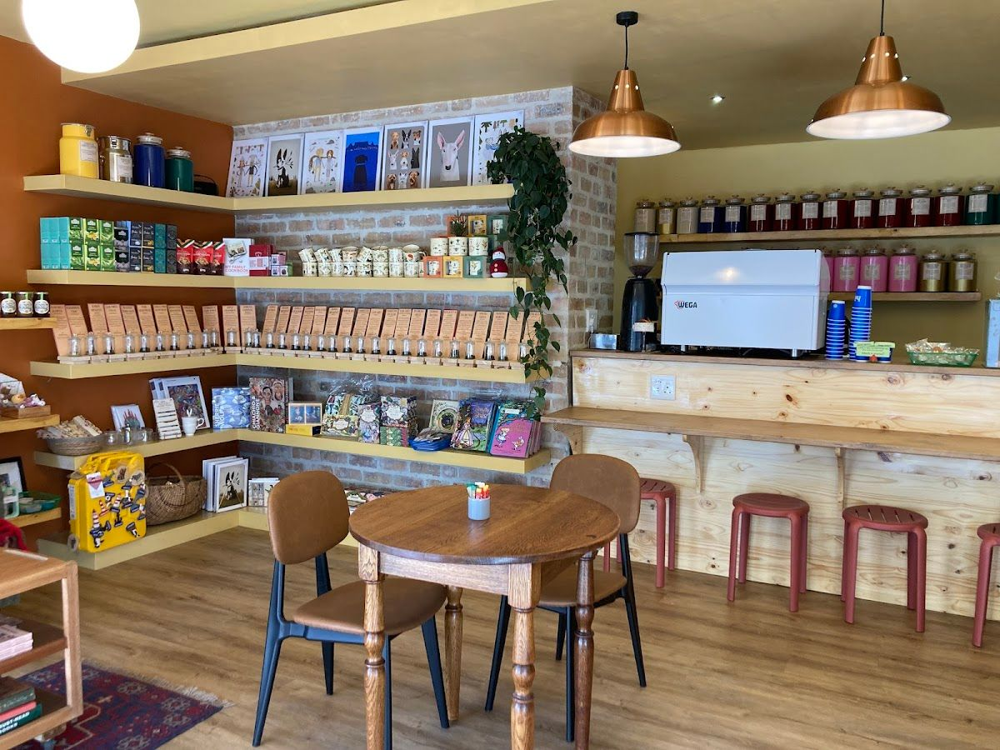

Mr. Write is not just another café; it's a beloved cornerstone in the heart of Hermanus, dedicated to bringing the most special coffee to our community. Our café is a place where locals and visitors alike can gather to enjoy the finest brews and delicious treats.
Our journey began with a passion for coffee and a desire to create a space where the community could come together. We've crafted a menu that reflects our love for quality ingredients and a welcoming atmosphere. Each cup of coffee is brewed with care and precision, offering a unique experience for every visitor.
At Mr. Write, our values are simple: quality, community, and comfort. We promise to provide a delightful experience, whether you're stopping by for a quick coffee or settling in for a leisurely afternoon. Our friendly staff is always ready to welcome you with a smile.
Discover the special offerings of Mr. Write, from our expertly brewed coffee to our delightful snacks.
Our coffee is sourced from the finest beans and brewed to perfection. Each cup promises a rich and flavorful experience, crafted to suit your unique taste.
Indulge in our selection of pastries and snacks, perfect companions to your coffee. From croissants to cheesecakes, each bite is a delight.
Here is what our clients say about us.
"Mr Write is just the most delightful place. My kids enjoyed playing the board games they had on offer while you drink your tea or coffee. We all enjoyed the Belgian chocolate croissants and cheesecake. The dirty Chai was amazing and we loved all the little items you could purchase. The worms in a jar was a hit with the kids and I loved the garlic mayo and homemade nougat. The owners are so friendly and the staff happy to help. We felt very welcome and it was a great place to stop at before hitting the high street for some shopping and a walk along the footpaths. I can highlight recommend trying them out."— Lee Goldschmidt, ⭐⭐⭐⭐⭐
"This is a marvelous find! ✨🤩 Such a wonderful and quaint little cafe! It is a must visit for sure! It was so interesting to go through all the unique items they sell 🎁❤️ They have a cool space-themed menu and are pet friendly too! 🐶😍 100% recommend!!"— Irma Rabe, ⭐⭐⭐⭐⭐
"Wonderful little Cafe! Love the quirky decor and offering. Food is delicious, and great for a light lunch - albeit a limited offering. Tea selection is unique and lovely. Staff are very friendly. Food can take a while when they are busy...but you are encouraged to relax in the Cafe, so fits the overall mood. Fantastic touches like a free book exchange, a comfy couch. Overall - this little Cafe packs a punch for its size!"— Angie Burton, ⭐⭐⭐⭐
"Mr. Write in Hermanus is honestly the most charming café I’ve ever visited! Every detail has been created with so much love — from the cozy, beautifully designed interior to the playful and witty menu that makes you smile while you read it. The coffee is excellent and comes served in the cutest cups with dogs on them — such a lovely touch! The atmosphere is warm and welcoming, and the owner is an absolutely wonderful person — kind, genuine, and full of positive energy. You can really feel the heart behind this place. If you’re in Hermanus, do yourself a favor and stop by Mr. Write. It’s the kind of spot that makes you happy just being there! 💛"— Eva Waldinger, ⭐⭐⭐⭐⭐
"Awesome little cosy nook. Great vibes, great serive and even better Tea! Sit down and play a game while enjoying some tea, or read a book while sipping a nice and warm coffee. And if that's not your speed, pair your drink with one of their delicious slices of cake or sandwiches!"— Riekert Janse van Vuuren, ⭐⭐⭐⭐⭐




We'd love to hear from you — reach out to us anytime.